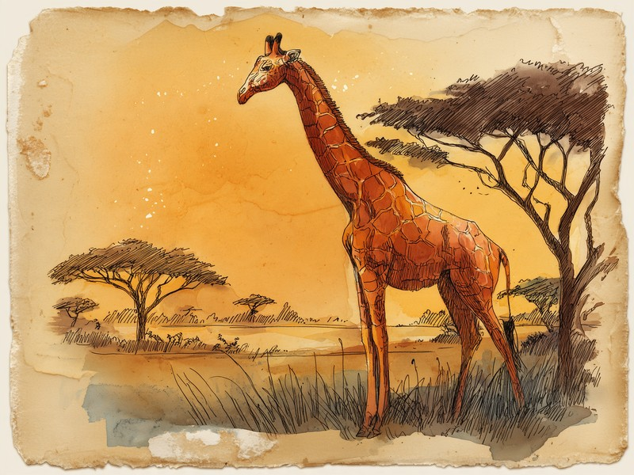

動物園でも1日4時間半ほどしか眠らず、野生ではその貴重な「横になって眠る時間」が一晩にわずか数分。首も脚も長すぎて、寝転ぶこと自体が命がけになってしまった「ざんねん」な体のつくりです。 Why do giraffes barely sleep? Lying down is so risky for an animal built like that, wild giraffes save it for just a few minutes a night.
動物園のキリンでも、睡眠は1日4.6時間ほど
キリンの睡眠がとにかく短いことは、動物園でのじっくりした観察でも確かめられています。飼育下のキリンを152夜にわたって記録した古典的な睡眠研究(Tobler & Schwierin、Journal of Sleep Research)によると、1日の睡眠時間は合計でおよそ4.6時間。そのほとんどは夜間で、昼間は短いうたた寝を挟む程度です。人間の半分以下、コアラと比べれば4分の1ほどの睡眠で、あの巨体を毎日動かしていることになります。しかもこれは天敵のいない安全な動物園での数字。野生ではどうなのかと調べてみたら、さらに驚く結果が待っていました。
野生では「横になって眠る」のが一晩にたった8.6分
2023年、ナミビアに暮らすアンゴラキリンに加速度計を取り付けて追跡した研究(Frontiers in Mammal Science)で明らかになったのは、野生のキリンが横になって眠る時間が、一晩に平均わずか8.6分ほどだったこと。これは体を横たえ、頭を自分のわき腹や地面に預ける深いREM型の睡眠姿勢だけを数えたもので、日暮れ直後と夜明け前に集中した2回ほどの短い寝入りに分かれていました。ただし注意したいのは、この8.6分には立ったままの浅いまどろみが含まれていない点です。キリンはウマのように立ったままうとうとすることもできるので、「まったく休んでいない」わけではありません。それでも深く眠れる時間が一晩に10分に満たないというのは、なんとも切ない数字です。
横になるのは、長い首と脚には命がけ
なぜここまで横になるのを避けるのかというと、最も広く挙げられているのが天敵への警戒です。キリンは横になってしまうと無防備なうえ、あの長い脚と首のせいで立ち上がるまでに時間がかかり、いざという時に逃げ遅れてしまいます。だから野生のキリンは、この無防備な姿勢をできる限り減らし、休息のほとんどを立ったまま済ませ、本当に横になって眠るのは一晩で最も暗く安全な時間帯に数分だけ。高い枝の葉を独り占めできる自慢の体が、眠る時だけは足を引っ張る。首が長いのは得なことばかりではない、というキリンならではの「ざんねん」な事情です。
キリンの舌は、濃い青紫色をしています。サンディエゴ動物園などの解説によると、高い枝の葉を食べる間ずっと舌が日差しにさらされるため、日焼けや紫外線のダメージから舌を守るための色だと考えられています。